import numpy as npOcean acoustics: quantities and jargon
Acoustic Intensity
Intensity: power through a unit surface
Acoustic intensity is the power per unit area carried by a sound wave.
It is typically measured in units of watts per square meter (W/m²)
Acoustic Intensity is proportional to the square of the RMS (Root Mean Square) pressure
\[ I = \frac{1}{\rho c}p_{rms}^2\]
where: - \(\rho\) is the water density - \(c\) is the speed of sound: speed of propagation of the pertubation - \(Z=\rho c\) is called acoustic impedence
Acoustic Impedence
- Property of a medium and describes how much resistance the medium offers to the propagation of a sound wave.
- It is a measure of the ratio of sound pressure to the particle velocity of the medium.
- Close analogy with electrical impedance
- where the RMS pressure is analogous to voltage and the acoustic impedance is analogous to the electric resistance R.
- Why RMS pressure? If we have a sinusoidal wave, the pressure will oscillate between a positive and negative number with zero mean. It has however a RMS value: \[ rms = \sqrt{\frac{1}{n}\sum_{i}{x^2_i}} \]
Decibel
In the analysis of sound propagation, it is customary to use the decibel (dB) notation to represent the level of various quantities relative to a chosen reference value of the quantity.
This is a convenient way to handle the wide dynamic range involved in acoustic problems.
It also simplifies many system calculations by replacing multiplications with additions of decibel quantities.
Decibels (dB) are a logarithmic unit that expresses the ratio between two quantities, usually some form of power or intensity.
In the case of sound, decibels are often used to express the relative loudness of a sound compared to some reference level.
Definition
- The decibel is 1/10 of a bel, which is a logarithmic unit of a power or an energy ratio.
- The decibel (dB) corresponds to 10 times the base-10 logarithm of the ratio of two powers or energies.
For example:
\[ \text{Power Level} = \text{WL}_{dB} = 10\log_{10} \frac{\text{W}_1}{\text{W}_2} \]
where the unit is Watt.
- If \(\text{WL}_{dB}\) is 10 dB, W1 is 10 times higher than W2.
- If \(\text{W}_1\) is two times larger than \(\text{W}_2\), \(\text{WL}_{dB}\) = 3 dB.
Acoustic intensity levels
The intensity level \(\text{IL}\) in \(dB\) in an acoustic field may be expressed by:
\[ \text{IL}_{dB} = 10\log_{10} \frac{\text{I}_1}{\text{I}_2} \]
Where \(I_1\) and \({I_2}\) are acoustic intensities: power per unit area
- Since the acoustic intensity is proportional to the square of the effective acoustic pressure (unit: Pa)
- The acoustic Sound Pressure Level (SPL) in dB may be expressed by:
\[ \text{SPL} = 20\log_{10} \frac{p_1}{p_2} \]
Reference Quantities
All quantities with subscript 2 are considered as reference quantities.
There are several units used to specify reference pressure in acoustics.
In air acoustics the reference quantity is \(20\mu\)Pa (equivalent to the reference intensity of \(10^{-12} W/m^2\)). This is used so that \(0\)dB corresponds to the hearing threshold of an average person (\(20 \mu\)Pa at 1m).
In underwater acoustics the reference quantity is \(1\mu\)Pa (equivalent to the reference intensity of \(6.67\cdot10^{-19} W/m^2\))
Sometimes the reference quantity is also \(1\mu\)bar (\(10^5\mu\)Pa).
In underwater acoustics is important to specify the reference quantity which is being used.
For example: - Sound pressure level \(\text{SPL}=210\)dB re \(1\mu\)Pa. - This means that the acoustic pressure \(p_1==10^{210/20}10^{-6} = 0.316\cdot10^5\) Pa.
20*np.log10(10)20.010**(210/20)*1e-631622.776601683792Transmission Loss
- Sound Pressure Level is also called Transmission Loss (\(\text{TL}\)):
\[ \text{TL}_{dB} = 10\log_{10} \frac{I}{I_0} = 20\log_{10} \frac{p}{p_0} \]
ratio between the received intensity level (\(I\)) and the source intensity (\(I_0\)) in dB.
It is the decrease in sound intensity as sound travels through a medium
Loss occurs due to the absorption, reflection, and scattering of sound waves by the medium through which it travels.
It is a relative metric (wrt the source intensity).
Arguably the most important quantity with which we interprect acoustic propagation
\(\text{TL}\) does not make it possible to know how loud is the source, it only tells us how much we lose through propagation
Source Level and Reference Intensity
Source Level
\(\text{SL}\), is the ratio between the intensity of the source @ 1m, from the source position and a reference intensity, in dB. - Note: we never measure intensity. Sensors measure pressure, and for this reason we work with pressures (and hence with \(20\log\)).
Reference intensity
Because of its large range, sound amplitude is often described in logarithmic units, decibels (dB).
Some small pressure is used as a reference pressure, and any other sound pressure is described as a level with respect to that reference pressure.
Researchers studying sound in water and air typically use a different reference pressure
In ocean acoustics, the reference intensity is the intensity of a plane wave with RMS pressure of \(1\mu\)Pa
Air acoustics uses \(20 \mu\)Pa as reference intensity: 0dB corresponds to the hearing threshold for a normal human listener for a sound frequency of 1,000 Hz.
These two references are, therefore, 26 dB apart (20 log 20 = 26)
This means that \(20\) dB underwater and in air correspond to different intensities!
If I have a \(20\) dB Sound Pressure Level, underwater corresponds to \(10 * 1 \mu\)Pa.
If I have a \(20\) dB Sound Pressure Level, in air, corresponds to \(10 \cdot 20\mu\)Pa.
dB is not a unit of measurement! and we need a reference.
20*np.log10(10), 20*np.log10((10*20)/20)(20.0, 20.0)Features of Oceanography
Oceanography is the study of the world’s oceans and their physical, chemical, and biological processes. It is an interdisciplinary science that combines elements of physics, chemistry, geology, biology, and meteorology to understand the complex interactions that occur within the marine environment.
Key features include
Ocean Circulation: The ocean is in constant motion, with currents flowing at different depths and speeds. These currents are driven by a variety of factors, including wind, temperature, and salinity differences, and play a crucial role in the distribution of heat and nutrients throughout the ocean.
Waves and Tides: Waves and tides are also important features of the ocean, affecting both the physical and biological aspects of the marine environment.
Ocean Chemistry: The chemical composition of the ocean is constantly changing, as it receives inputs from rivers, the atmosphere, and submarine vents. Oceanographers study how these inputs affect the ocean’s pH, salinity, and nutrient levels, and how these changes impact marine life and global climate.
Marine Biology: The ocean is home to an incredibly diverse array of life, from microscopic plankton to massive whales. Oceanographers study the distribution and behavior of these organisms, as well as the complex interactions that occur within marine ecosystems.
Coastal Processes: The interactions between the ocean and the land are also an important focus of oceanography, as they affect both the physical and human environments. Coastal processes include erosion, sediment transport, and the formation of beaches and estuaries.
Sound Speed Profiles (SSP)
In ocean acoustics, sound speed profile refers to the variation of the speed of sound in seawater as a function of depth, pressure, temperature, and salinity
The main factor affecting the propagation of acoustic waves in the ocean is the speed of sound
It has a nominal value of 1500 m/s in temperate and equatorial oceans
Small variations in the speed of sound have a profound effect on acoustic propagation in the ocean.
The speed of sound at any point in the ocean (non-linearly) depends on the local temperature, salinity, and hydrostatic pressure (or depth).
In a horizontally stratified ocean, the temperature and salinity are independent of horizontal range: they only vary with depth.
- Sound speed only vary with depth
- This is roughly true in the deep oceans (away from features such as eddies or fronts).
- Sound speed only vary with depth
|
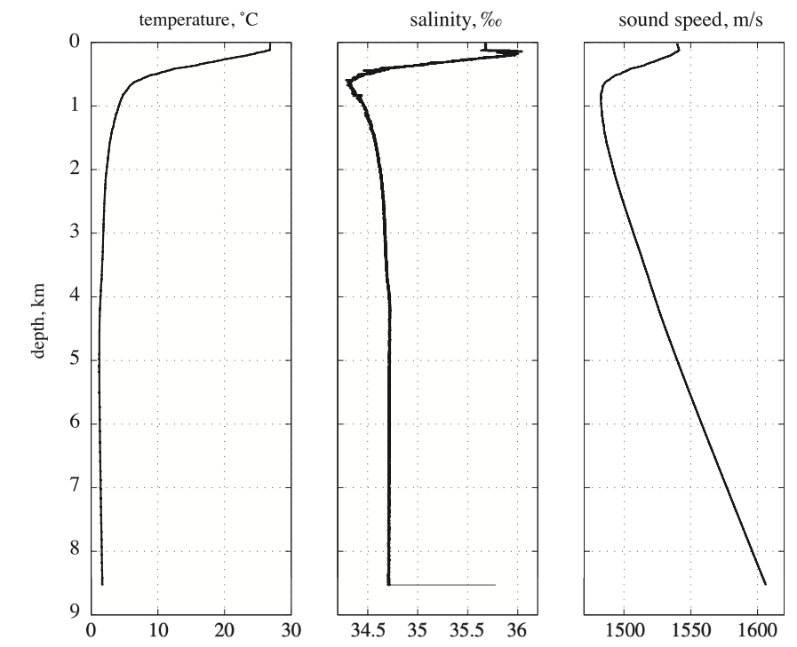 Temperature, salinity, and sound speed profiles, Tonga Trench, South Pacific Ocean, September 2012 (Applied Underwater Acoustics). |
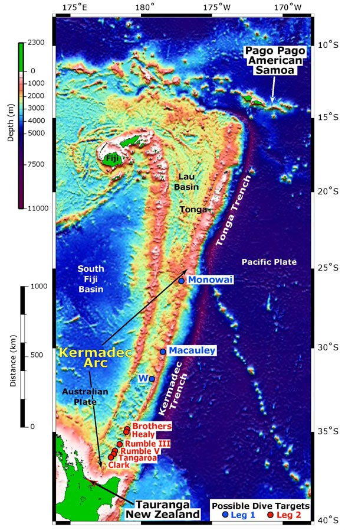 Tonga Trench: it is the deepest trench in the Southern hemisphere and the second deepest on Earth after the Mariana Trench. |
- Over most of the ocean depth the salinity is essentially uniform
- Close to 34.85 parts per thousand
- Variations in the sound speed profile are driven by the temperature and the pressure.
|
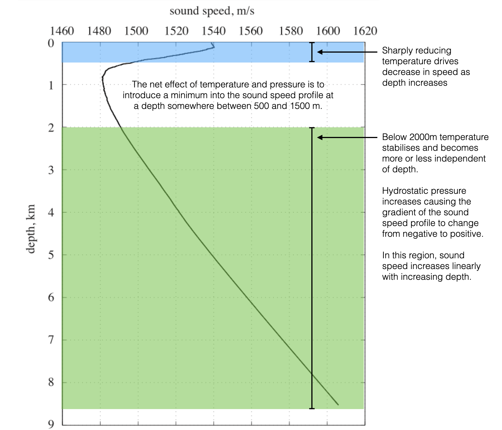 Sound speed profile, Tonga Trench, South Pacific Ocean, September 2012 (Applied Underwater Acoustics). |
Chen-Millero Empirical Equation
- Sound speed depends on salinity, temperature and depth
- Sound speed equation identified based on multiple measurements of salinity, temperature and depth done across the seas and the oceans
\[ c = 1449.2 + 4.6T - 0.055T^2 + 0.000229T^3 + (1.34-0.01T)(S-35) + 0.016Z \]
where - \(c\) \(m/s\), sound speed - \(T\) \(^oC\), temperature - \(S\) \(psu\), salinity (parts per thousand) - \(Z\) \(m\), depth
It is an empirical equation (UNESCO certified)
A typical profile
|
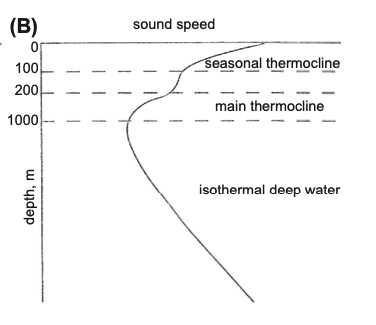 |
Very close to the surface: - Depth is small (\(Z \approx 0\)). - Temperature and salinity drive the speed. - Temperature is strongly influenced by solar radiation. Sound speed depends from hourly variations.
Close to the surface: - Seasonal variations in temperature (winter vs summer) - drops in temperature drive drops in speed - seasonal thermocline (i.e., seasonal temperature gradient).
For ex. in the Mediterranean Sea, temperature is approx constant in the first 10m, then it start decreasing. At what depth exactly depends on local conditions.
Between 200/300m - 500m - Temperature decreases more or less in the same way everywhere - Atmospheric influence is not important anymore - Specific depth depends on geographic location - This is called main thermocline
Below 1000m - Temperature does not vary anymore (deep isothermal layer) - Depth drives change in sound speed.
Munk Profiles
- A canonical model of the sound speed profile in the deep ocean has been developed by Munk
- Assumes specific properties of the ocean (i.e., exponential stratification: density of seawater exponentially increases with depth)
- There is not a single Munk profile but they are representative of a behaviour
see also: Munk, W. H., Sound channel in an exponentially stratified ocean, with application to SOFAR, J. Acoust. Soc. Am., 55, pp. 220e226 (1974).
# z is in km
z_1 = 1.2 # z1 is the depth of the sound channel axis
c_1 = 1500 # c1 is the speed of sound at the axis
B = 1.3 # km
epsilon = 0.0074
z_vector = np.linspace(0, 5, 60)
c_z = []
for z in z_vector:
eta = 2*(z-z_1)/B
c_z.append(c_1*(1 + epsilon*(eta+np.e**-eta-1)))
conjugate_speed = c_z[np.where(c_z>c_z[0])[0][0]]
conjugate_depth = z_vector[np.where(c_z>c_z[0])[0][0]]
plt.figure(figsize=(5, 6))
plt.plot([min(c_z), max(c_z)], [z_1, z_1], color='black', linestyle='--')
plt.plot([c_z[0], c_z[0]], [z_vector[0], z_vector[-1]], color='black', linestyle='--')
plt.plot([conjugate_speed-10, conjugate_speed+10], [conjugate_depth, conjugate_depth], color='black', linestyle='--')
plt.text( 1540, 1, 'sound channel axis')
plt.text( 1540, conjugate_depth, 'conjugate depth')
plt.text( 1510, conjugate_depth+0.5, 'depth excess')
plt.plot(c_z, z_vector)
plt.gca().invert_yaxis()
plt.xlabel('sound speed (m/s)')
plt.ylabel('depth (km)')Text(0, 0.5, 'depth (km)')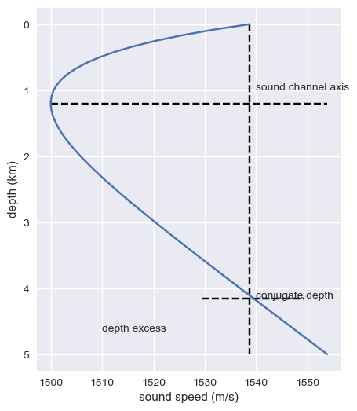
Comments: - At the conjugate depth, sometimes referred to as the critical depth, the sound speed is equal to that at the sea surface, and in the region labeled “depth excess,” it is greater than the speed of sound at the sea surface. - Any profile showing a depth excess supports convergence zone propagation, whereby steep rays follow deep, upward refracted paths and regions of high intensity known as convergence zones, or caustics are formed near the surface at regular intervals in range - Typically, the range interval between convergence zones in the Atlantic Ocean is of the order of 60 km.
Influence of Temperature, Salinity and Depth on the SSP
</tr>|
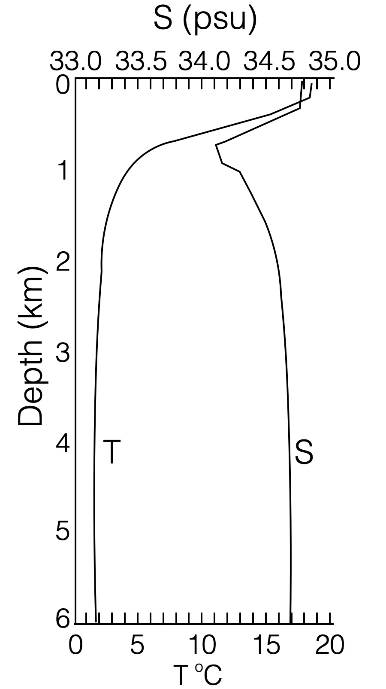 |
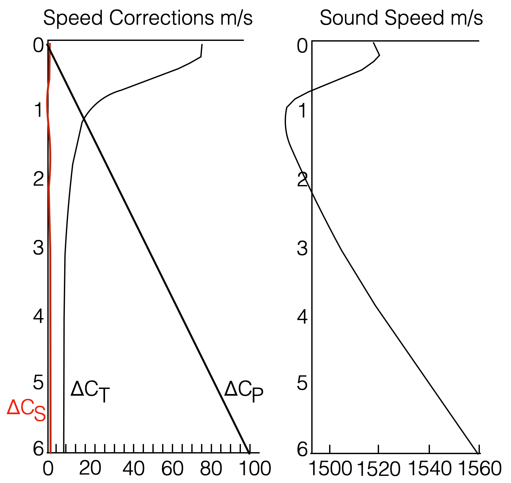 |
Temperature - \(\text{T}\) is a typical profile. - The shallower part migth have daily or seasonal variations. - Main thermocline when temperature decreases. - At deeper depths, is constant between 1 and 3 degrees. - Typical profile is representative of the behaviour.
Salinity - \(\text{S}\) is a typical profile - Minimum at a certain depth (around 1000m) - At deep depths, it is almost constant
Speed corrections in the Chen-Millero equations due to each separate contribution are reported in the middle graph above: - The speed correction \(\Delta C_T\) follows closely the temperature profile. - Change in speed is about \(60-70\) m/s - \(\Delta C_P\) is the change in speed due to change in depth - \(\Delta C_S\) is the change in speed due to change in salinity. Salinity only contributes a few m/s.
- At shallow depths, sound speed mostly depends on temperature
- At deep depths, sound speed mostly depends on depth.
(see right most plot).
Temperature at sea surface
Monthly average
|
|
- Maps based on observations by the Moderate Resolution Imaging Spectroradiometer (MODIS) on NASA’s Aqua satellite.
- The satellite measures the temperature of the top millimeter of the ocean surface.
- In this map, the coolest waters appear in blue (approximately -2 degrees Celsius), and the warmest temperatures appear in pink-yellow (35 degrees Celsius).
The most obvious pattern shown in the time series is the year-round difference in sea surface temperatures between equatorial regions and the poles. Various warm and cool currents stand out even in monthly averages of sea surface temperature. A band of warm waters snakes up the East Coast of the United States and veers across the North Atlantic the Gulf Stream.
Data is available from the NASA website
Seasonal Average
|
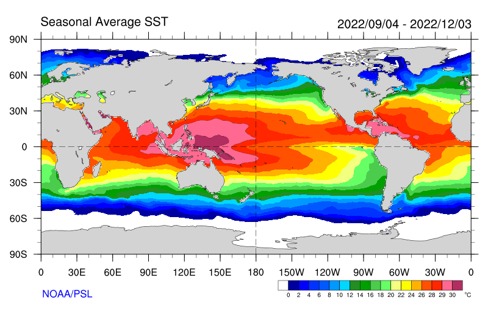 |
Notable features - Humboldt currents - Gulf stream
Data from NOAA and its interactive website
|
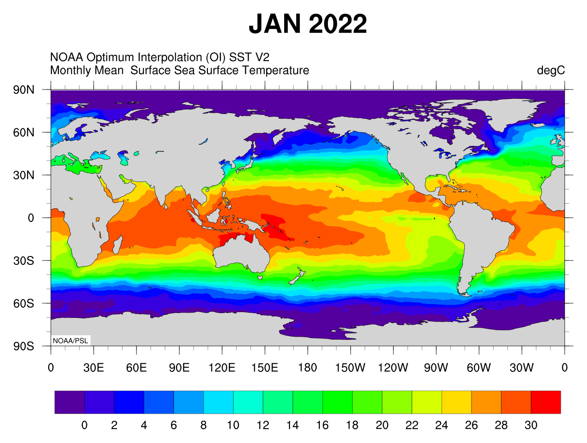 |
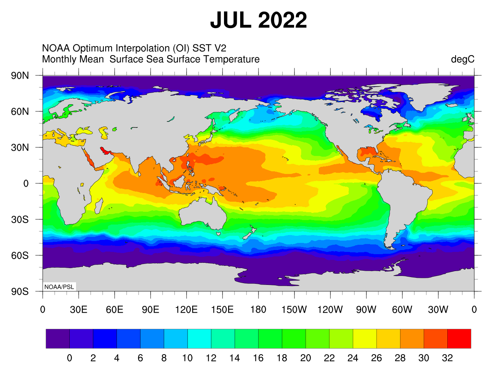 |
Temperature vs depth
|
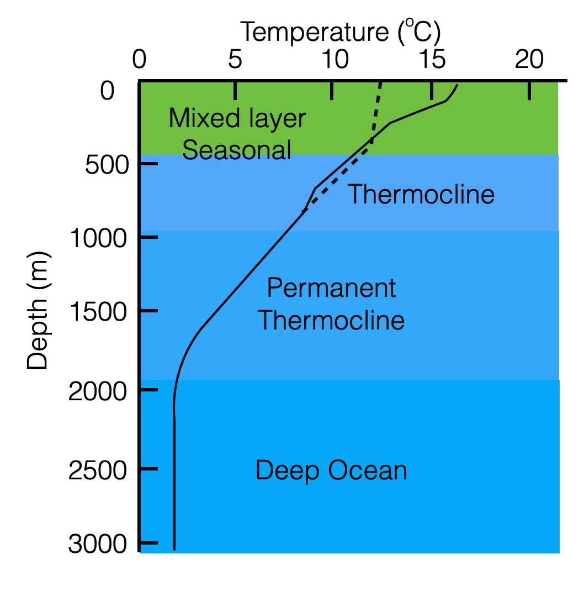 |
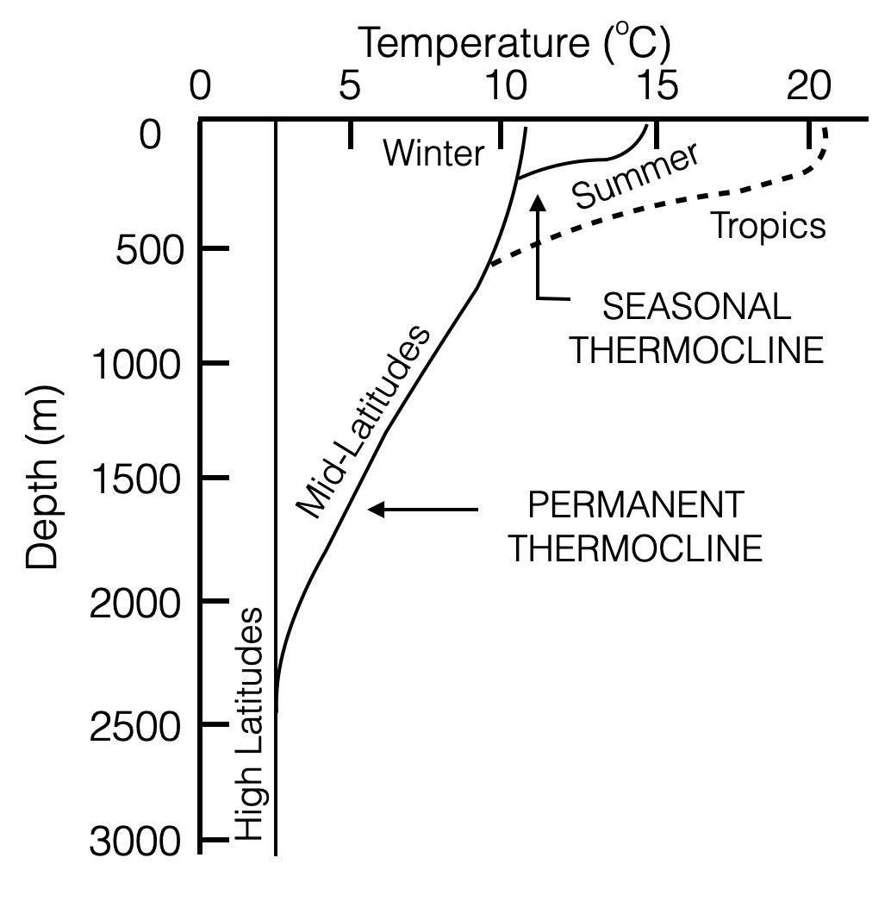 |
- Depths are indicatives (they might change depending on latitude/longitudes)
- Note the difference between high latitudes and mid-latitudes
- First layer: Mixed layer where temperature depends on the thermal exchange with the atmosphere
- presence of seasonal thermoclines (right picture)
- Main permanent thermocline
- Isothermal deep layer
- Tropics have less seasonal difference, and have a much steeper permanent thermocline due to warmer waters at the surface (see also Montly and seasonal average plots above).
- At High latitudes, surface water is 1 or 2 degrees (e.g. due to ice meltings and salty waters), and there is no (or almost no) thermocline.
Depth and Temperature Distribution across the Atlantic
Water physical properties (temperatude, salinity, etc) changes with depth and latitude/longitude
The picture below shows what happens when we travel across the Atlantic
Data from EWOCE
Note how the main thermocline moves deeper as we travel from high latitudes to mid-latitudes, to the equator
SSP would still resemble a Munk profile but their key points would be different
Note also the difference between same latitudes in the North and South Atlantic due to presence of the Gulf Stream in the North Altantic.
See also Metoffice | The Atlantic Meridional Overturning Circulation
|
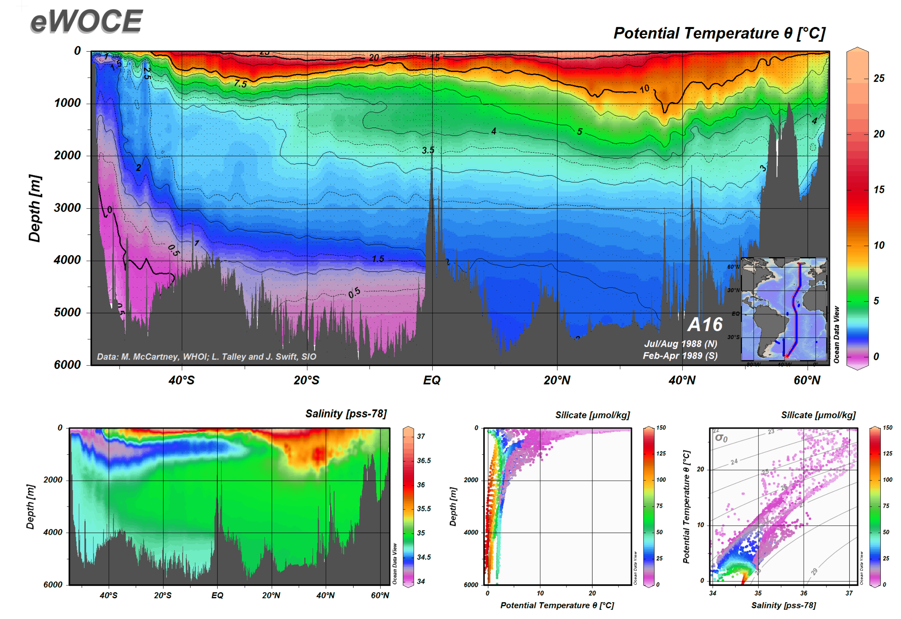 |
|
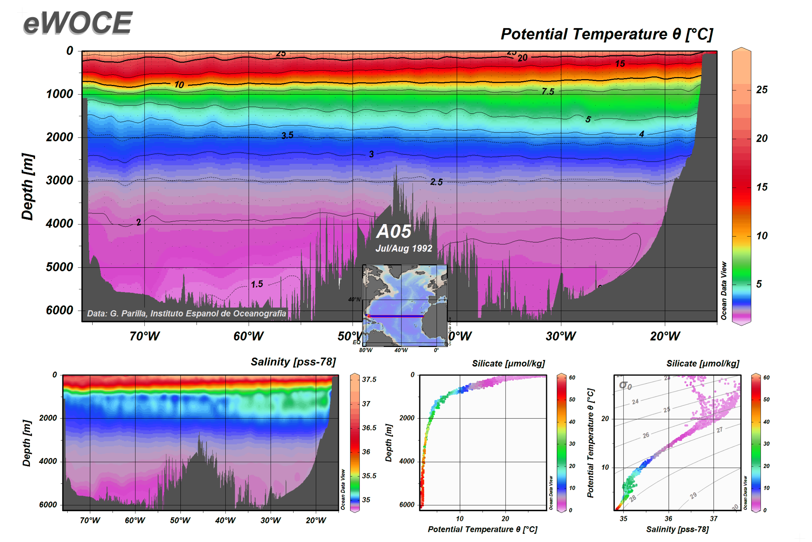 |
Measuring Temperature
Rather than being measured directly, the sound speed profile is commonly computed from temperature and salinity data recovered from a conductivity, temperature and depth (CTD) probe or from temperature data acquired with a bathy-thermograph (BT)
In the case of the latter, the salinity, which is not returned by the BT, is often estimated for the purpose of computing the sound speed profile from archival salinity data
A direct measure of the sound speed profile may be obtained using a sound velocity sensor (SVX) based on the “sing-around” principle. An ultrasonic pulse is transmitted over a fixed path between a source and a receiver. When the pulse arrives at the receiver, it triggers the transmission of another pulse from the projector. The repetition frequency of the pulses is mainly determined by the travel time over the path length, which is controlled by the speed of sound in the fluid (seawater in the case of ocean profiling) between the source and receiver.
Salinity
Definition: “Total material amount in grams dissolved within 1kg of seawater”
Dissolved: pass through a 0.2\(\mu m\) filter
Adimensional quantity: grams over kilos, which is equivalent to say “parts per thousands” (ppt)
Operative definition: we can use it to measure salinity. Measuring salinity using the definition is not really practical…
Alternative: Practical Salinity Scale (psu),
- The most practical method currently used is through electrical conductivity.
- This is an indirect method which needs an accurate relationship between the conductivity \(C\) and the salinity \(S\) as a function of temperature \(T\) and pressure \(p\).
- The salinity determined in this way is called the practical salinity
- It is not exactly equivalent to measuring salinity in parts per thousands.
- Electrical conductivity is easy to measure
To reduce measurement errors, we measure the relative conductivity \(R\): - The seawater conductivity \(C(S,T)\) relative to the conductivity \(C(35,15)\) of a standard saline solution at \(15^o\)C containing \(32.4356 g\) Potassium chloride (KCl, or potassium salt) in a mass of \(1\) kg (ppt) at 1 atm pressure (1 atm = 101325 Pa).
- Relative conductivity: \[R=\frac{C(S,T)}{C(35,15)}\]
The relationship between the salinity \(S(T)\) and the relative conductivity \(R=R(S,T)\):
\[ S(T) = S(15) + \Delta S(T) ,\;\; R=\frac{C(S,T)}{C(35,15)} \]
\[ S(15) = 0.008 − 0.1692R^{1/2} + 25.3851 R + 14.0941 R^{3/2} − 7.0261 R^2 + 2.7081R^{5/2} \]
\[ ΔS(T) = \frac{(T−15)}{1+0.0162(T−15)} + 0.0005 − 0.0056 R^{1/2} − 0.0066 R − 0.0375 R^{3/2} + 0.0636 R^2 − 0.0144 R^{5/2} \]
for \(2\le S \le42\). If \(R=1\) we have \(S=35\).
Salinity Sensors
Salinity sensors measure the electrical conductivity of seawater, which is proportional to its salinity.
Platinum Electrode Conductivity Sensor
Measure the electrical conductivity of seawater.
The sensor consists of two platinum electrodes that are immersed in the seawater.
An alternating current is passed through the electrodes, and the electrical resistance of the seawater between the electrodes is measured.
The electrical conductivity of the seawater is proportional to the concentration of dissolved salts in the water, including sodium, chloride, and other ions.
Platinum electrode conductivity sensors have the advantage of being relatively simple and robust
Provide accurate salinity measurements over a wide range of temperatures and salinities.
Conductivity, \(C\), is found as:
\[ C = G \cdot k_c \]
where \(G\) is the conductance, and \(k_c\) is the cell constant.
- Conductance is defined as the reciprocal of resistance. When resistance is measured in ohms, conductance is measured using the SI unit, siemens (water samples are commonly measured in microsiemens, or µS - Siemens is a large unit).
The cell constant is determined for a probe as:
\[ k_c = d/A \]
where \(d\) is the distance between the two electrodes, and \(A\) is the area of the electrode surface.
- A potential difference is applied to the two probe electrodes in the salinity sensor.
- The resulting current is proportional to the conductivity of the solution.
- This current is converted into a voltage.
|
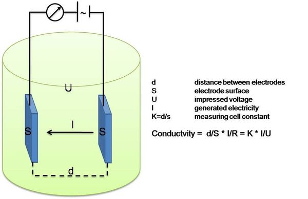 |
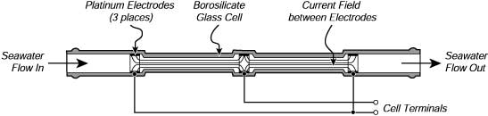 |
Electrodeless Conductivity Sensor (Inductive)
- Use inductive coils.
- The sensor consists of two coils which are incorporated next to one another in a polymer or ceramic body, and forming a current transformer.
- The coupling between the two coils of a transformer depends on the conductivity of the medium (in our case sea water)
The sensor is designed so part of the liquid media forms a closed conductive current path passing through the coils. Current is applied to the primary coil (generating coil), which induces an alternating voltage in the liquid loop. In liquids which conduct electricity, this causes a current flow captured by the second coil (receiving coil), which is proportional to the conductivity of the sample solution.
</tr>|
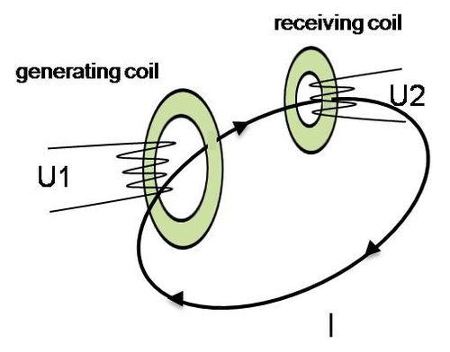 |
Salinity at sea surface
|
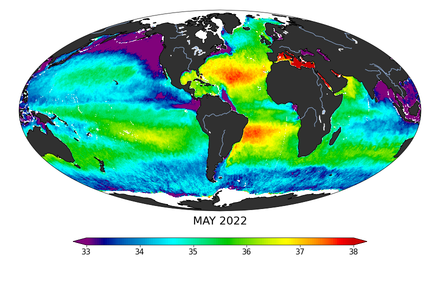 |
| Global map of monthly sea surface salinity, May 2022. From https://salinity.oceansciences.org/data-maps.htm |
- On average, sea surface salinity is about 35 PSS.
- Over the globe, sea surface salinity varies from 32 to 37 PSS.
- Salinity variations are caused by precipitation, evaporation, runoff, and ice freezing and melting.
- Seawater’s density – mass per volume – is governed by temperature, salinity, and depth.
- Along with temperature, salinity is a major factor in contributing to changes in the density of seawater and therefore ocean circulation.
- Ocean circulation below the wind-driven surface (tens to hundreds of meters in depth) is driven by changes in seawater density.
|
|
Salinity vs Depth
|
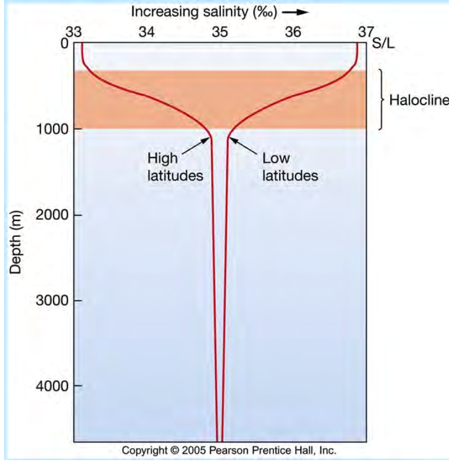 |
- High Laitudes: low salinity at the surface
- Low Latitudes: high salinity at the surface
- Halocline: salinity gradient
Temperature, Salinity and Density
|
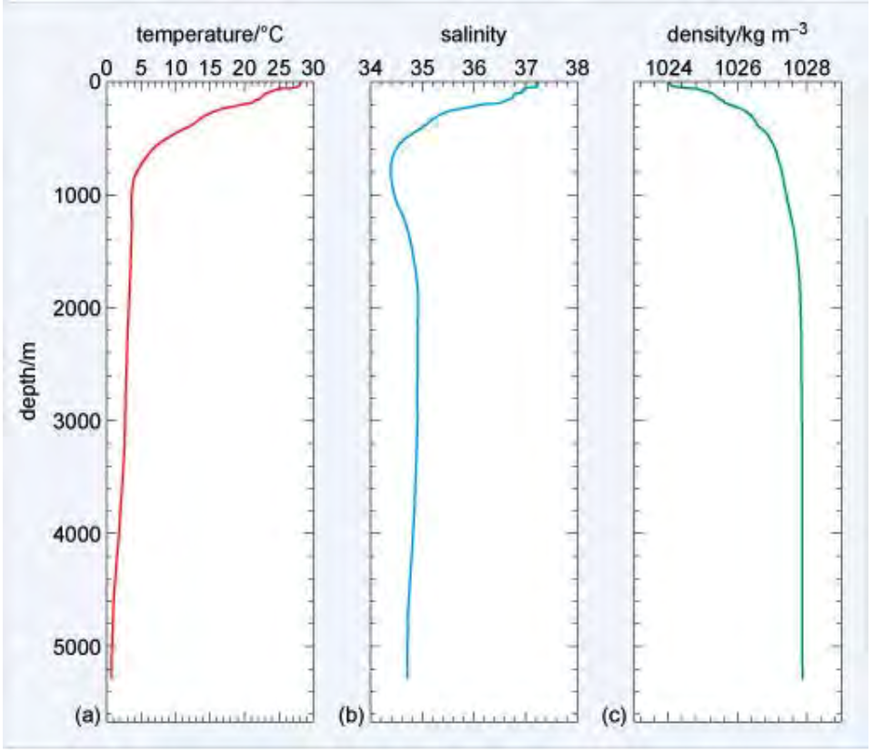 |
Density of Ocean is determined by temperature, the quantity of dissolved salts (also known as salinity), and the pressure to which a parcel of seawater is exposed
The density of seawater can be increased by reducing its temperature, increasing its salinity, or increasing the pressure
Pressure has the least impact on density as water is fairly incompressible, so pressure effects are not very significant except at extreme depths
Temperature and salinity are the primary factors determining density, and of these, temperature has the greatest impact
Density is lowest at the surface, where the water is the warmest. As depth increases, there is a region of rapidly increasing density with increasing depth
Density changes are important for robotics: buoyancy!
Affects vehicle balancing
Sea surface density
|
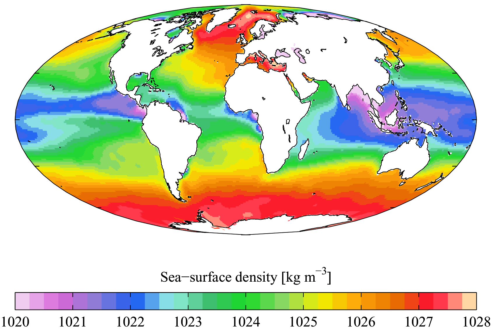 |
Back to Sound Speed
|
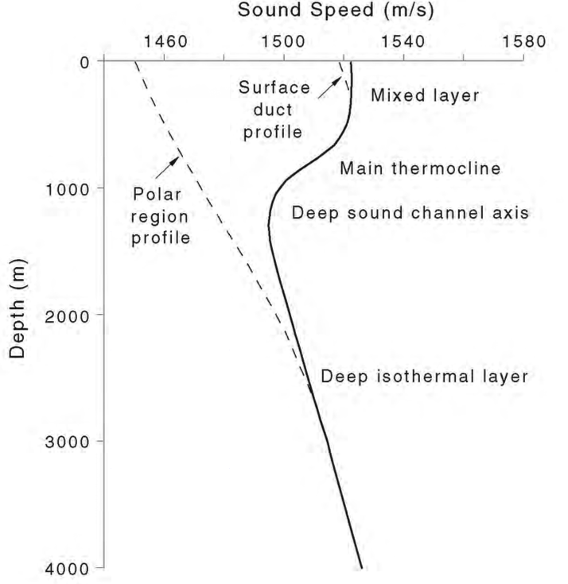 |
- Typical value: 1500 m/s
- Polar regions: sound speed is usually only increasing with depth.
- Temperature more or less constant (already low), and sound speed increases with depth
- Surface duct profile
- Surface waters has temperature lower (a few degrees) than that 5-10m below (e.g., summer nights cooling thin surface layers after very hot days)
- Sound speed slower than that of lower layers.
Comments
Sound is faster with temperature (Warmer waters means sound is faster)
Sound is faster with depth (linearly)
Sound is also faster with salinity
In the same geographical place, sound speed varies as we go down in water column.